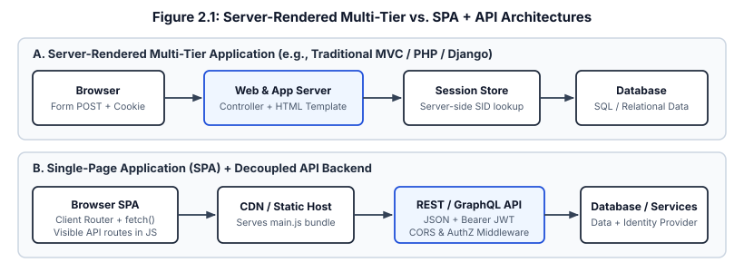
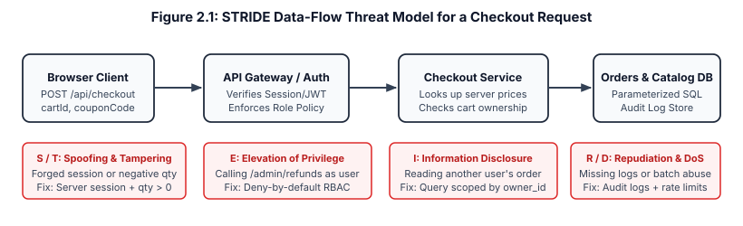

Chapter 2: Web Architecture, Threat Modeling, and Reconnaissance
Learning Objectives
By the end of this chapter, you should be able to:
- Decompose a modern web application into its architectural tiers, data flows, and trust boundaries.
- Conduct a lightweight threat model using the four core questions and STRIDE categories.
- Distinguish passive application mapping from noisy automated scanning.
- Build a structured attack surface inventory of endpoints, parameters, roles, and data stores.
2.1 Modern Web Application Architectures
Before testing an application, you need an accurate mental model of how it is built. Two architectural patterns dominate modern web systems:
Server-Rendered Multi-Tier Applications
Traditional applications (such as DVWA and Mutillidae II in our lab stack) render HTML on the server. The browser submits an HTML form or requests a URL; the server queries a database, populates a template, and returns complete HTML. State typically lives in server-side sessions backed by a cookie.
Single-Page Applications (SPAs) and API Backends
Modern applications (such as OWASP Juice Shop) separate the frontend from the backend. The browser downloads a JavaScript bundle once, renders the user interface locally, and communicates with a REST or GraphQL API using fetch() or XMLHttpRequest over JSON.

As shown in Figure 2.1, the two architectures distribute state and trust differently:
- In a server-rendered multi-tier application (Panel A), the browser submits forms and receives complete HTML pages; session state stays in a server-side store referenced by an opaque cookie, and routing/authorization logic lives on the server.
- In an SPA + API backend (Panel B), the browser downloads a static JavaScript bundle once and calls JSON endpoints using
fetch()and Bearer tokens. This split improves UI responsiveness, but it exposes API route names, parameter schemas, and client-side role checks inside readable JavaScript bundles—making server-side authorization and CORS controls essential.
2.2 Threat Modeling: Thinking Before Testing
Threat modeling is the structured practice of identifying what can go wrong in a system before writing code or running tests. As outlined in the OWASP Threat Modeling Cheat Sheet, a practical threat model answers four questions:
- What are we building? (Draw the architecture, data flows, and trust boundaries.)
- What can go wrong? (Identify threats at each boundary.)
- What are we going to do about it? (Select preventive, detective, or architectural controls.)
- Did we do a good enough job? (Verify controls and update the model when features change.)
Using STRIDE at Trust Boundaries
When reviewing a data flow diagram, security engineers commonly apply STRIDE to ask systematic questions about each component and boundary:
| Category | Security Property Violated | Web Application Example |
|---|---|---|
| Spoofing | Authentication | Forging a session cookie or replaying a stolen JWT |
| Tampering | Integrity | Modifying a hidden price field or injecting SQL syntax |
| Repudiation | Non-repudiation | Performing an admin deletion with no audit log entry |
| Information Disclosure | Confidentiality | Reading another user's invoice via an IDOR endpoint |
| Denial of Service | Availability | Triggering an expensive unpaginated export query |
| Elevation of Privilege | Authorization | Calling /api/admin/users with a standard user token |
Threat modeling prevents aimless testing. Instead of throwing random payloads at every input field, you prioritize high-value assets (user credentials, payment flows, administrative functions) and the trust boundaries protecting them.
Worked Example: Threat Modeling a Checkout Flow

As shown in Figure 2.2, tracing a single POST /api/checkout request across four components reveals distinct STRIDE threats at each boundary:
Consider an e-commerce checkout endpoint (POST /api/checkout accepting {"cartId": 42, "couponCode": "SAVE10"}):
- Spoofing: Can an unauthenticated caller or another user submit
cartId: 42? Control: bindcartIdto the server-side authenticated session. - Tampering: Can a client supply a negative item quantity or a modified unit price? Control: look up prices strictly from the server catalog and enforce positive integer quantities.
- Information Disclosure: Does
GET /api/orders/42expose another customer's shipping address? Control: enforce record ownership in the database query. - Elevation of Privilege: Can a standard shopper invoke
POST /api/admin/refunds? Control: enforce role-based middleware with deny-by-default routing.
Tying each threat directly to a data-flow boundary turns abstract security concerns into concrete engineering requirements: every arrow crossing a boundary requires an explicit validation, authentication, or authorization check.
2.3 Reconnaissance and Application Mapping
In web security, reconnaissance (or information gathering, mapped in OWASP WSTG v4.2 Section 4.1) means systematically discovering how an application behaves before attempting any exploit.
Passive vs. Active Mapping
- Passive observation inspects normal responses without sending malformed or high-volume traffic: reading HTML source, inspecting
robots.txtorsitemap.xml, reviewing client-side JavaScript bundles, checking response headers (Server,X-Powered-By,Content-Security-Policy), and walking through normal user workflows with an intercepting proxy recording traffic. - Active probing sends targeted requests to discover hidden routes, test parameter behavior, or verify how the server handles unexpected methods or content types.
Noisy brute-force directory scanning at high request rates is rarely the right first step. Walking the application manually with browser developer tools or OWASP ZAP / Burp Suite gives you context: you see why an endpoint exists, what parameters it expects, and which roles call it.
Building an Attack Surface Inventory
An attack surface inventory documents every entry point where untrusted data enters the application or privileged actions occur. A clean inventory table records:
| Endpoint / Route | Method | Auth Required | Inputs / Parameters | Observed Behavior | Notes / Risk Hypothesis |
|---|---|---|---|---|---|
/rest/user/login | POST | No | JSON email, password | Returns JWT token | Test rate limiting, error messages, SQLi |
/api/BasketItems | POST | Yes | ProductId, quantity | Adds item to cart | Check negative quantity or basket ID tampering |
/ftp/ | GET | No | File path | Lists static files | Check path traversal or exposed backups |
Notice how each row connects an endpoint, authentication state, user-controlled inputs, and a testable hypothesis. This inventory becomes your test plan for the rest of the assessment.
2.4 Fingerprinting Without Overclaiming
Response headers, cookie names (PHPSESSID, JSESSIONID, connect.sid), error pages, and JavaScript frameworks often reveal the underlying technology stack. Knowing whether an application runs Node.js/Express, PHP, or Java/Spring helps you select relevant test cases—for example, checking prototype pollution or NoSQL patterns in Node.js versus Java deserialization in Spring.
However, fingerprinting is only a clue. Headers can be spoofed or stripped by a reverse proxy, and a framework version alone does not prove a vulnerability is reachable. Always verify behavior rather than assuming a scanner's banner match is an exploitable flaw.
Key Takeaways
- Threat modeling connects architectural trust boundaries to concrete STRIDE failure modes before testing begins.
- Manual walkthroughs reveal business context, roles, and API routes that noisy automated scanners miss.
- An attack surface inventory turns reconnaissance observations into a structured, prioritized test plan.
Applied Exercise
Draw a data-flow diagram for a password-reset feature, mark every trust boundary, and list one Spoofing, Tampering, and Information Disclosure threat with a server-side mitigation.
Review Questions
- Why does separating an application into a browser SPA and a JSON API expose more routing information to a tester?
- Map each letter of STRIDE to one concrete web application failure.
- What is the advantage of manual application walkthroughs over immediate automated directory brute-forcing?
- What columns belong in an attack surface inventory to make it actionable for security testing?
References
- OWASP Cheat Sheet Series: Threat Modeling — https://cheatsheetseries.owasp.org/cheatsheets/Threat_Modeling_Cheat_Sheet.html
- OWASP Web Security Testing Guide v4.2: 4.1 Information Gathering — https://wstg.owasp.org/v4.2/4-Web_Application_Security_Testing/01-Information_Gathering/
- OWASP Application Security Verification Standard (ASVS) — https://owasp.org/projects/asvs